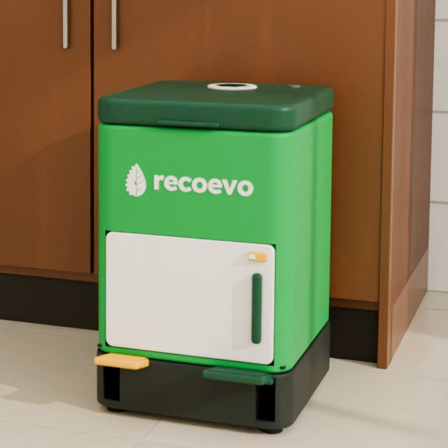
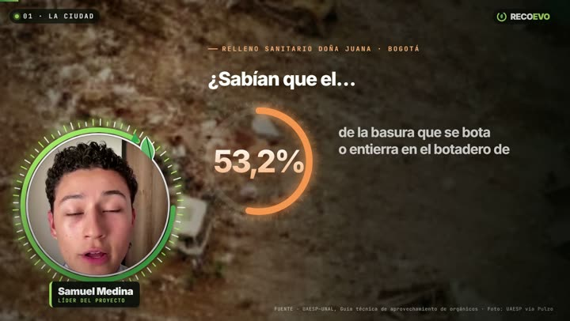
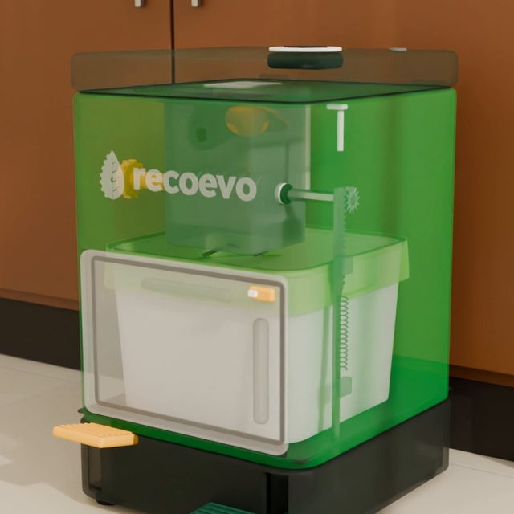
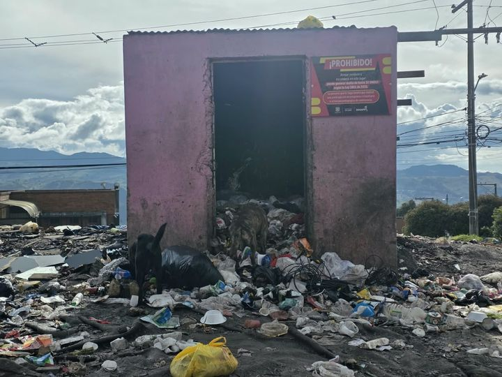

Elige qué quieres ver
-

1Ver el prototipo en 3D
Gíralo, acércalo, sepáralo y toca cada pieza para ver qué hace.
-

2Video pitch del equipo
El equipo cuenta el problema, la idea y el plan en 2 minutos.
-

3Video del prototipo explicado
Cómo funciona RECOEVO, pieza por pieza y por dentro.
-

4Estudio de campo: resultados de las encuestas
Lo que nos dijeron 8 vecinos de Usme y lo que vimos en la calle.
-
5
Presupuesto realista
Inversión, costos, ventas y ganancia de los 10 años, explicados en palabras sencillas.